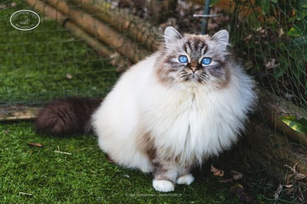

Nos chats
Ceux qui font la maison
Nos reproductrices actuelles, nos retraités qui vivent toujours avec nous, et tous ceux qui ont construit l’élevage.
Nos reproductrices
Elles vivent avec nous et donnent naissance à nos chatons
KCH · JCH
Un Chouïa Craquante Aka Cracotte des Innamorati
Femelle · chocolat tortie tabby point
IC
Simone de Beauvoir des Innamorati
Femelle · seal tabby point
IC · DVM
Sanae des Innamorati
Femelle · blue pointNos retraités
Stérilisés, ils profitent de la maison
GIP
Poker Face des Innamorati
Femelle · seal point
SC · NW · JW · DSM · DVM
Œdipe des Innamorati
Mâle · seal point
Crowned Dream Lizz
Femelle · lilac tabby point
GIC
Crowned Dream Kacey
Femelle · seal tabby pointNos anciennes reproductrices
Retraitées dans des familles aimantes
T'as Pas vu Pépette des Innamorati
Femelle · chocolat tortie tabby point
Rey des Innamorati
Femelle · chocolat tortie tabby point
Quintessence des Innamorati
Femelle · seal tabby point
Padmée des Monts de Bohème
Femelle · chocolat tabby point
Olyna du Bossuet Perrières
Femelle · seal tabby point
Only The Very Best des Innamorati
Femelle · seal tabby point
CH
Odyssée du Castel Walou
Femelle · chocolat tortie point
Naïade du Bossuet Perrières

Norma Jean des Innamorati
Femelle · seal point
Birmiao Anaïs
Femelle · seal point
CH
Mia Bella de la Tribu Birmane
Femelle · chocolat tabby point
CH
Malicia du Castel Walou
Femelle · chocolat point
GIC
Blue Treasure's Jazzy
Nos anciens reproducteurs
Les mâles qui ont vécu chez nous
S*Eikefjord’s Sundance Kid
Mâle · blue point
Rush Boom Bang Du Relais Napoléon
Mâle · lilac point
Peppone des Innamorati
Mâle · chocolat tabby point
Crowned Dream Quinten
Mâle · lilac tabby point
Oasis du Grand Baronnet
Red tabby point
Crowned Dream Ice
Mâle · chocolat tabby point
S*Easy Love's Crush Boom Bang
Mâle · seal tabby pointPères venus d’ailleurs
Ils n’ont pas vécu chez nous mais sont les pères de nos chatonsNos chatons ont aussi pour pères les mâles de notre amie Cathy Viltange : Origan de Shweli-Sittang, Bacckara's Bellamy, Umami du Sanctuaire Divin, Taran du Bas de Lock.
Eros, notre premier Birman
Celui par qui tout a commencéEros n’était pas au standard de la race et n’a jamais reproduit. Il a été notre adoré chat de compagnie, et c’est grâce à lui que nous sommes tombés amoureux du Sacré de Birmanie.